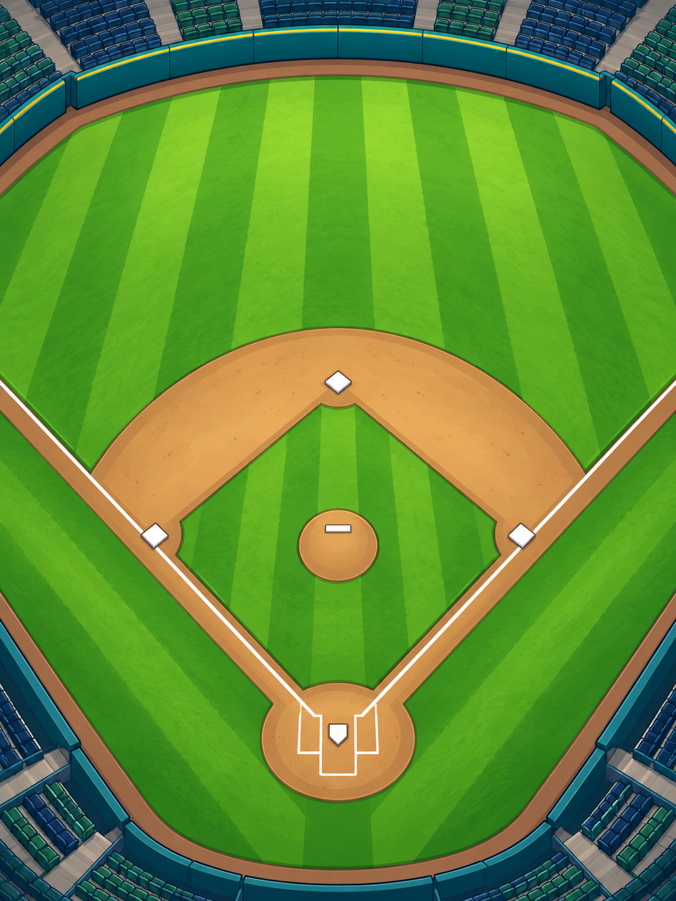

BASEBALL HEROES · 1.0.34TEAM con campo ilustrado y fichas legibles
Publicada y comprobada por HTTPS. La cuenta temporal QA se retiró y se conservaron las cuentas anteriores.
La vista del equipo sustituye el campo de figuras simples por una ilustración, amplía las fichas y usa retratos en las posiciones. El jugador seleccionado tiene una ficha lateral más clara, barras de atributos y estadísticas separadas. Los cinco accesos inferiores incorporan sprites existentes.
Abrir el juego · HOME → TEAM · Notas y pruebas
El equipo completo dentro del mismo marco
 Antes · 1.0.33 · campo geométrico, marcadores pequeños y paneles planos
Antes · 1.0.33 · campo geométrico, marcadores pequeños y paneles planos Después · 1.0.34 · campo ilustrado, retratos, fichas y bordes con relieve
Después · 1.0.34 · campo ilustrado, retratos, fichas y bordes con relieveLa cabecera comparte los recursos del resto del juego. Cada página contiene hasta doce jugadores y muestra su retrato, posición, OVR y si pertenece al orden al bate. El borde dorado identifica la ficha seleccionada. Al cambiar de selección se repinta el borde sin reconstruir el retrato de cada ficha.
Consultar un compañero y abrir sus habilidades
 Ficha de un compañero · valores base, forma y estadísticas
Ficha de un compañero · valores base, forma y estadísticas SKILLS recibe al compañero seleccionado
SKILLS recibe al compañero seleccionadoTRAIN y SKILLS reciben el objeto del jugador seleccionado. EQUIP conserva su comportamiento de gestionar el equipo del héroe; la ayuda lo indica expresamente. CARDS y LINEUP abren sus pantallas existentes. La prueba aprende una habilidad del compañero y comprueba que no cambia al héroe ni a los demás jugadores.
Los atributos conservan los valores de TEAM: Power y Contact muestran aparte el bonus de equipo aplicable al héroe; Luck mantiene su valor base. Las barras reflejan esos números y no añaden bonificaciones de habilidades o forma. FORM muestra el estado ya guardado, sin volver a sortearlo.
Reservas, páginas y nombres largos
 Cuenta QA con 30 jugadores · última página de seis fichas
Cuenta QA con 30 jugadores · última página de seis fichas Seleccionar el retrato del héroe vuelve a su página
Seleccionar el retrato del héroe vuelve a su páginaCon treinta jugadores se muestran doce, doce y seis fichas. Las flechas se desactivan en los extremos. Los nombres largos se ajustan en la ficha; el panel lateral muestra el nombre completo. Seleccionar un retrato del campo también selecciona su ficha, incluso si se encontraba en otra página. La ampliación a treinta jugadores se preparó únicamente en las cuentas QA.
El campo dice ROSTER POSITIONS: resume la primera persona del roster que tiene cada posición base. No mueve jugadores ni sustituye el orden al bate, que sigue configurándose en LINEUP. Las cartas especiales siguen gestionándose en CARDS/LINEUP. Si falta una posición se muestra OPEN y no hay acción al pulsarla.
Una ilustración nueva y sprites que ya teníamos

Campo reconstruido mediante la herramienta integrada image_genEl campo es arte nuevo para el remake, no una imagen original recuperada ni una pantalla confirmada por los videos. El PNG se copia sin editar sus bytes y se muestra completo, sin recortarlo. Los retratos, emblemas de habilidades e iconos inferiores reutilizan los recursos existentes. Las formas de cabeza, el personaje creado y la cabeza de bateo aprobada de 0.8.6 conservan su código.
Prompt completo y procedencia · Dimensiones y SHA256. Los marcos, barras y controles son interfaz nativa con relieve. No hay un nuevo bucle de animación por fotograma en TEAM ni se promete una mejora general de FPS.
Verificación del roster y la navegación
Dos suites locales en Chrome: una recorre WebMain de producción sin instrumentación, desde registro sin código y creación de personaje, pasando por selección, navegación, aprendizaje de un compañero, treinta jugadores y recarga. La otra comprueba todos los controles del roster, límites de página, nombre largo, selección desde el campo, posición vacía y controles ya retirados. Ambas conservan el modelo durante la consulta; los únicos cambios de habilidades provienen de pulsar LEARN en su pantalla existente.
Recorrido local real · Roster y callbacks · Fuentes y paquete
El recorrido de producción pasó también por HTTPS. Prueba pública · 143 archivos verificados · Retirada de la cuenta QA.
Se conservan GameData, modelos, reglas, motor, servidor, cliente web, arte anterior, audio, guardado v24 y SQLite v4. No se reinician cuentas ni temporadas. Se verificó una copia SQLite previa. La biblioteca antigua 1.0.28 se archivó localmente con sus hashes para liberar espacio; 1.0.33 y 1.0.32 siguen en Railway. Archivo reversible. La prueba de amigos entre dos computadoras físicas sigue pendiente.